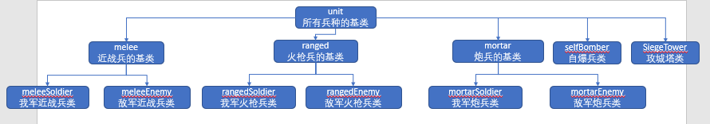

软73 沈冠霖 2017013569 shenguanlin1999@163.com
src中，HoldTheFort文件夹是游戏前端的工程文件夹，backEnd文件夹是后端的源代码（后端的实际代码运行在服务器上）。
ext文件夹存储了一些辅助图片（比如类继承关系），其design文件夹存着所有界面的设计图。
游戏名称：Hold The Fort(守卫堡垒)
操作系统：Windows 10
开发环境：Cocos Creator 2.0.10 + VSCode
上传工具：微信开发者工具
测试手机：一加5
这是一款2D塔防游戏，游戏设定在17,18世纪之交的大土耳其战争中，一座被奥斯曼军队层层包围的城堡。你扮演城堡守将或援军将领，目标是尽可能多杀伤敌人，守卫城堡。
游戏一共有两个模式：Standard Game（标准模式）和Artillery Game（炮兵模式）。在这两个模式中，多种敌人会被源源不断地刷出，你的目标都是守卫城堡，不让敌人占领广场，同时尽可能多的击杀敌人以获得分数。在标准模式下，你的任务是拖动单位到城墙上来抵抗敌人。在炮兵模式下，你控制四门大炮攻击敌人。
游戏地图中央是你要守卫的城堡，城墙上是我军士兵，周围会源源不断地随机刷出敌军士兵。杀死敌人士兵，你会获得分数和金钱。一旦敌人占领城堡中心的广场一段时间，游戏就会结束。
标准模式下，你要做的是利用好手头的金钱，从右侧的三个按钮处拖放你要的兵种到城墙上。利用好不同兵种的特性来有效防御城堡，击杀敌人。整个流程类似植物大战僵尸。
这个模式下，城堡的守军会自动刷新。你操作四门大炮，大炮会自动调度，你只需要在合适的时机，向合适的位置开炮就好。为了有效防御城堡，杀伤敌人，你需要综合考虑大炮的装填时间，攻击的提前量，还有与友军进行配合。
2.2 游戏界面
游戏共有如下页面
具体的页面信息见3.
游戏定义了以下兵种
近战步兵：近距离作战，生存能力强
火枪兵：远程作战，发射子弹攻击，生存能力一般
炮兵：超远距离作战，发射炮弹，范围无差别攻击，但是生存能力差，装填速度慢
自爆兵：只有敌人有，快速冲向最近的我方士兵，被杀死或者到达目标都会自爆，范围无差别攻击
攻城塔：只有敌人有，移动速度慢，但是生存能力很强，只能向城墙移动。但是攻城塔出现的时候，其后面会同时出现一大批敌人。
游戏还定义了以下物体
近战步兵，火枪兵和炮兵的AI类似。
如果攻击范围内没有敌人，那么我军会站在城墙上不动，敌人会向城堡中心方向移动。如果攻击范围内出现敌人，这三种兵种都会发动攻击，然后站在原地进行装填或冷却。
自爆兵的AI则是寻找离自己最近的我军士兵，然后自爆。如果没有我军士兵，自爆兵则会向城堡中心方向移动。
攻城塔则是向最近的城墙移动。
每个兵种都有对应的生命值和生命恢复。每秒士兵会自动恢复生命。其生命值显示在其下面的红色血条上。
每个兵种都有攻击力和防御力，兵种造成伤害的计算函数如下:
每个兵种都有装填时间，在攻击结束后，单位会进入装填状态，待在原地不动。其装填时间显示在下面的紫色条上。
我方兵种都有等级和经验。我军每攻击一次都会增加经验，其等级显示在兵种下方，经验显示在下面的金色条上。
两个模式的敌人都是随机生成的，分为三个频率的事件。频率最快的是刷出敌人小兵1个（近战兵，火枪兵），频率中等的是刷出敌人高级兵（自爆兵，炮兵），频率最慢的是刷出敌人大部队（攻城塔附带一系列近战兵和火枪兵）。
炮兵模式的我军也是随机生成在城堡上的，只不过近战兵和火枪兵概率较大，炮兵概率较小。
在标准模式下，如果你的金钱够用，你可以点击右侧兵种的对应按钮，用手指把兵种拖动到对应位置，然后松手放置单位。拖动的时候，如果此处能放置，你手指的位置会变黄，否则变红。
在炮兵模式下，你可以用手指在屏幕上拖动选择攻击位置，然后松手攻击。如果当前能攻击，你手指的位置会变黄，否则变红。炮弹就落在你手指松开的位置。
我一开始想做类似《文明》的回合制对战，但是因为回合制对战无论写AI还是联机对战，难度都太大，因此放弃。之后我就考虑做类似《植物大战僵尸》的塔防游戏，我选择把《文明》的兵种设定，《全面战争》的攻城模式和《植物大战僵尸》的游戏玩法结合，做成了标准模式。
在游戏制作中，我意识到，自己做的炮兵AI选择的攻击目标往往不是最优解，而《植物大战僵尸》的玉米加农炮则是手工操作的。因此，我在原有游戏框架上设计了炮兵模式，让玩家自己控制炮兵攻击的位置。个人感觉，炮兵模式更有意思。
个人认为，游戏设计的创新点有两点。首先，相比《植物大战僵尸》，游戏地图是真2D的，无论攻击目标选择还是移动都是在平面内进行的，丰富了玩家的选择，提高了游戏难度。其次，炮兵模式个人觉得是一个比较有趣味，也比较有新意的模式。
游戏主界面和游戏信息界面都是简练的图文描述+按钮。
游戏结算界面我实现了显示本局游戏分数，以及本模式的总共历史最高分（因为体验版小游戏不能自动读取用户信息了）。总共历史最高分是用一个简单的后端实现的，将在4里介绍。
两个模式的游戏界面大致相同，都是用tiledmap构成游戏的主地图，再在边角添加按钮，分数和金钱显示等。我用tiled工具生成了一个有两层（groundLayer，Showlayer）的主地图，其中地图中央是围着一圈的城堡，可以放友军，敌人上城堡会有一定的debuff，地图其余地方是绿色草地。同时，我还在两个游戏中添加了暂停/继续按钮，声音开关和快速结束按钮，来优化游戏体验。
游戏流程如下：在主界面点击GameInfo按钮会进入游戏信息界面，可以点击对应的按钮查看对应的游戏信息，也可以返回主界面。主界面可以点击Standard Game和Artillery Game 按钮分别进入两个模式。为了防止加载主游戏场景的卡顿，我在进入游戏场景前添加了一个加载场景，在这里预先加载游戏场景资源，读条完毕后自动进入游戏。在游戏中，可以点击Finish按钮结束游戏，或者被敌人占领广场自动结束游戏，之后就会跳转到结算界面。结算界面可以回到主界面。
游戏主体框架，就是以士兵和其他物体的生成和更新。这里我参考了之前用C++做QT游戏的各种思路。
士兵我选择用树形的继承关系来定义，每个叶子节点对应一个实际兵种，具体的继承关系如下：

和之前写QT不同的是，由于这里的兵种有很多共用的方法，比如血条，经验条的更新等，因此我这样定义属性和方法：我在基类unit里把所有通用的属性和方法都定义好，到了具体的子类里，我再定义专用的属性和方法，以及把不用的基类方法覆盖成空函数。这样可以最大限度复用基类函数，不用重复定义。
我把士兵状态分为两类：第一类是自己可以处理的，包括生命的恢复，装填/冷却，经验值和等级的变化，血条，装填条和经验条的变化，还有位置的移动。第二类是需要其他全局信息才能处理的，包括生成，攻击，被攻击，地形debuff。第一类状态的更新在士兵类内部的update函数下实现，第二类状态的更新在游戏主类mainGame的update函数下实现。
我在获取分数，获取金币的地方用到了dispatchevent方法。这样，如果一个敌人被杀死了，它被杀死的信号就可以传播到其父亲节点含有的主游戏类中被接收，这就和QT的信号-槽方法一样，降低了耦合度。
作为这个游戏的最主要交互方式，我觉得触屏事件的实现是我这个游戏最大的功能亮点。
在标准模式下，我实现了如下的功能：可以用手指把边上按钮代表的兵种拖动到特定位置，并且在我拖动的时候，我手指所在的格子会变色---有效位置是黄色，无效位置是红色。手指抬起，就会在有效位置放置兵种。
我的实现方法如下：
首先，用一个变量chosenType来表明我当前选中的兵种类型。没有选中就是-1，否则是0,1,2中的一个。在我的手指移动的时候，也就是TOUCH_MOVE事件产生时，我使用event.currentTouch._point来读取触摸的世界坐标，并且把这个坐标转化成关于canvas的坐标。
然后，我计算出这个坐标对应的正方形地图格，并且在这个格子上放一个物体：如果是有效的，就放黄色物体，否则放红色物体。同时，我清理所有的其他红/黄色物体。
最后，松手的时候，也就是TOUCH_END(在不远处松手)和TOUCH_CANCEL(拖动了较长时间或较远距离后松手)时，我清除所有的红/黄色物体，并且根据chosenType来确定放置哪个兵种，并且把chosenType置为-1.
在炮兵模式中，我重写了这个触屏事件，让其能在拖动时显示当前是否能炮击，以及松手进行炮击。
在代码中，比如兵种，游戏模式等都有编号。为了提高可读性，我在constants文件下把他们定义成了全局常量，这样关于这些编号的代码可读性就能提高。
我在constants文件下定义了一个全局静态变量模块：globalModule。在场景切换时，我可能需要传递当前要加载的场景（主界面到加载界面）或者分数（游戏界面到结算界面），我就把这些静态变量赋值成我需要的值，在新的场景读取即可。
同样，因为全局静态变量的特性，我用它实现了游戏的暂停/继续(whetherPlayGame)，以及声音开关(whetherHasSound)。
首先，在暂停/继续按钮和声音开关按钮处，我实现了点击按钮就切换按钮图片，并且将对应的变量取反。
其次，想暂停游戏，只需要屏蔽所有的update函数和触屏响应函数即可。我就在对应的函数开头作了判定：如果暂停了，直接退出。声音关闭也只需要不播放音乐音效，并且暂停场景音效即可。
本来计划写每个用户的个人记录的，但是因为微信取消对非正式版主域中wx.getUserInfo的支持，只能实现所有玩家的历史最高记录了。
前端我使用XMLHttpRequest函数，发送当前的模式和分数到服务器上。在服务器上，我使用express框架，用类似第四次小作业的方式处理请求，解析出模式和分数。然后，我把分数保存在服务器上名字和模式相同的文件里，并且从这个文件读出最大值，返回。
个人觉得，自己在游戏效果和优化上做的比较好的有几点：
这次作业是全自主设计，的确难度不太小，想设计出一个内容丰富，容易扩展的大作业并不容易。我的想法是迭代开发，先做出不太难做的游戏内核，然后不断添加功能，最后我不仅把兵种扩展到了5种，还添加了一个新的游戏模式和一个简单的后端，游戏内容丰富起来了。同时，不断的迭代也帮我消除了很多bug。
我之前几乎从没玩过手游，的确，手机端，尤其是微信小游戏的游戏设计对我难度是很大的。包括性能限制，网络延迟，分包加载，屏幕适配等都是潜在的问题。为了减小屏幕不匹配问题，我选用了比手机最常用的1300多*700多还小一号的屏幕。为了减少性能造成的卡顿，我增加了一个loading界面。这里感谢王世杰同学帮我解决了分包加载的问题。
通过这次作业，我的确提高了代码能力和工程能力，对游戏引擎，前端和手机游戏也有了更深入的理解，学会了如何写更健壮的程序。
体验版二维码如下：